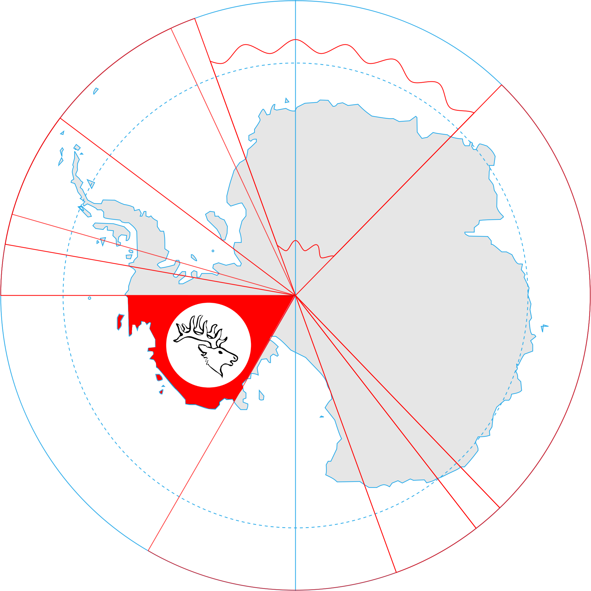
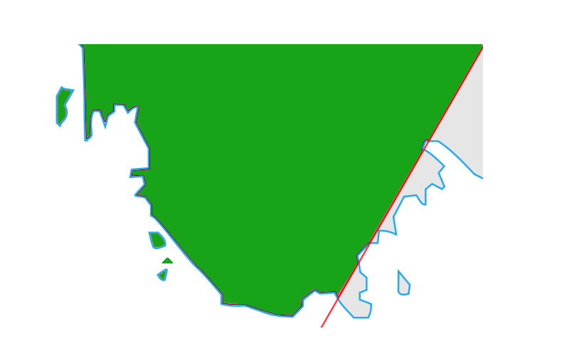
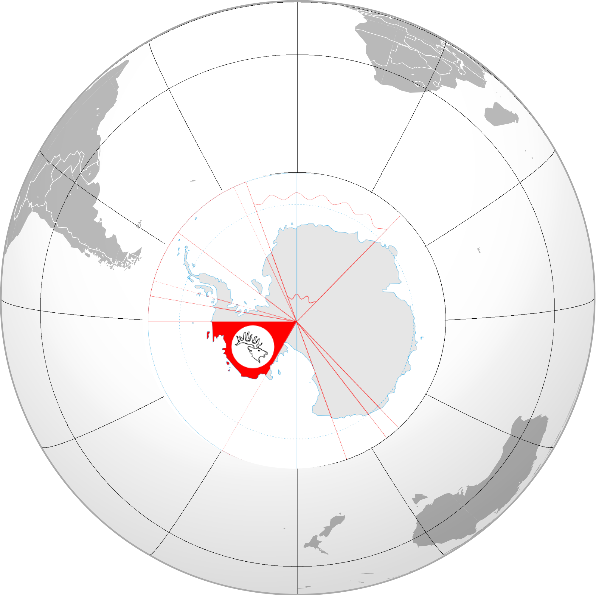
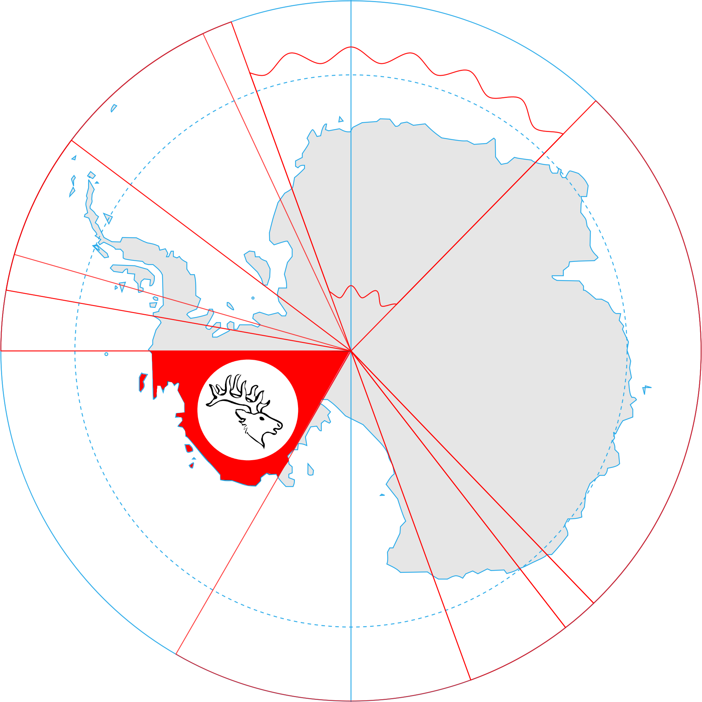
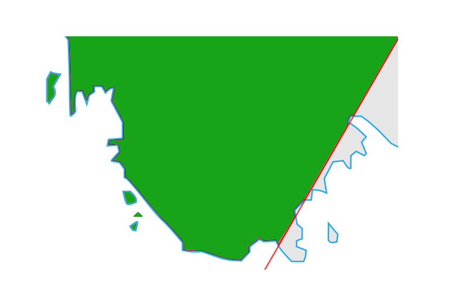
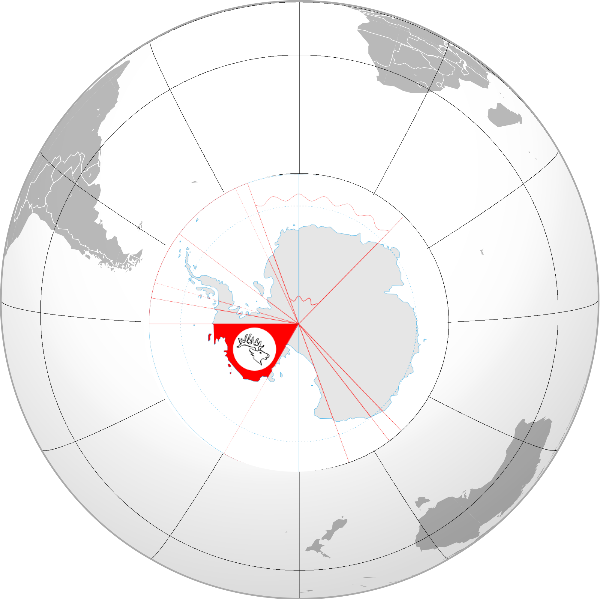

Also, we have a single-area map, used by internal organizations and ministries.

There's a global map, for wiki entries and similar items :

Colonies and Protectorates
Jabir empire has no colonies and protectorates.
| Territory Claims of Jabir Empire | ||
|
Jabir Empire has claimed Marie Byrd Land as mainland territory.
This part of Antarctica was a Terra-Nullius (No man's land) before claiming by Jabir Empire. Now, this territory is
under control of us, and we have duty to defend this territory.
 Also, we have a single-area map, used by internal organizations and ministries.  There's a global map, for wiki entries and similar items :  Colonies and Protectorates Jabir empire has no colonies and protectorates. |
|